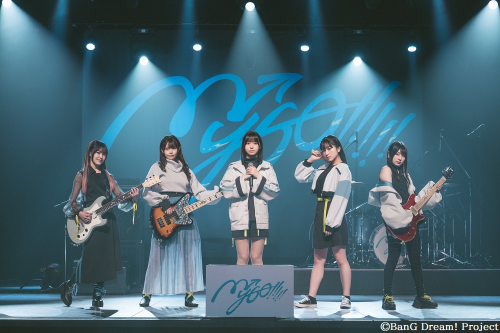
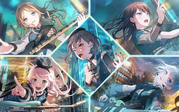
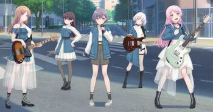

MyGO!!!!!
Even if we lose our way, we keep on moving.
MyGO!!!!! is an all-girl band in the BanG Dream! franchise. The group consists of five members, namely Takamatsu Tomori on vocals, Chihaya Anon on rhythm guitar, Kaname Raana on lead guitar, Nagasaki Soyo on bass, and Shiina Taki on drums. It is a band born from the synchronization of "reality" and "virtual".
Timeline
The band members initially were unknown and hid their faces while performing, before they were finally revealed during MyGO!!!!! 4th LIVE.
On June 27, 2023, it was announced that they would be added into Girls Band Party! in Fall 2023. They were added on September 16, 2023 for the 6.5th anniversary on the Japanese server, on the Taiwanese server on February 27, 2024, and on the Chinese server on April 10, 2024. They were added on the Worldwide server on September 17, 2024.
On July 4, 2024, BanG Dream!'s producer Nemoto Yuuki released a statement explaining that MyGO!!!!! will not be receiving any full-band events in Girls Band Party! until Spring 2025, as their "story is intended to first develop through the compilation movies and BanG Dream! Ave Mujica", however they are not entirely neglected as they will appear in various Mixed events starting from Fall 2024.
Background
A girls band formed by five members who are determined to move forward, even as the lost. They stand on stage carrying their uncertain feelings and worries they can't find answers to.
After transferring to Haneoka Girls' High School before the start of Golden Week, Anon noticed that many students at the school were forming bands, which inspired her need to form one herself. She ends up meeting "Haneoka's Weirdo Girl" Tomori, the vocalist of the now disbanded CRYCHIC, along with Taki, the drummer of the same band. At RiNG, Anon ends up meeting with Soyo, who seemed to have sparked an interest when Anon mentioned Tomori to her, due to her still being distraught after the disbanding of CRYCHIC. The four girls ended up forming a band, later adding Raana onto the list of members, which completed their "band of lost girls".
Trivia
Their band name "MyGO!!!!!" is a play on the Japanese word "maigo". It literally means lost child/children. It is also a pun in two languages. In English, it references the phrase "My go," which is a way of saying "my turn." The title for their band story It's MyGO!!!!! is a play on this phrase. Most of MyGO!!!!!'s song titles are in gikun, kanji with a special reading. Similar to Poppin'Party, the initials of the members, excluding the vocalist, can form the word "STAR". If the vocalist's initial is included, it can form the word "START". If the vocalist's name meaning ("light") is included, their names can create the word "Starlight". Anon was the only member who had no experience with her instrument prior to MyGO!!!!!'s formation. MyGO!!!!!'s character designs were done by Ueta Kazuyuki and their original character illustrations were done by Shuzuku. Ueta was in-charge of the character designs for the 2nd and 3rd seasons of the anime, as well as for the Episode of Roselia movies, FILM LIVE 2nd Stage, and the Girls Band Party! 5th Anniversary Animation. They had their very own anime announced on April 9, 2023. It began airing on June 29, 2023. Their family names (Takamatsu, Chihaya, Kaname, Nagasaki and Shiina) are all based on the names of areas in Toshima.
